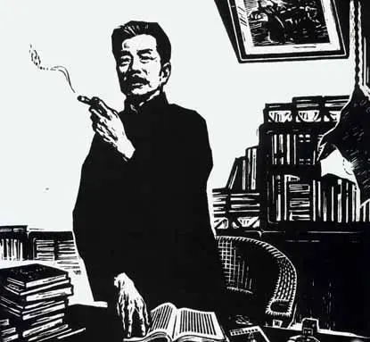

- 《朝花夕拾》想到生的乐趣，生固然可以留恋；但想到生的哭趣，无常也不一定是恶客。
我常想在纷扰中寻出一点闲静来，然而委实不容易。目前是这么离奇，心里是这么芜杂。一个人做到只剩了回忆的时候，生涯大概总要算是无聊了罢，但有时竟会连回忆也没有。 - 《背影》我看见他戴着黑布小帽，穿着黑布大马褂，深青布棉袍，蹒跚地走到铁道边，慢慢探身下去，尚不大难。可是他穿过铁道，要爬上那边月台，就不容易了。他用两手攀着上面，两脚再向上缩；他肥胖的身子向左微倾，显出努力的样子。这时我看见他的背影，我的泪很快地流下来了。
他少年出外谋生，独力支持，做了许多大事。那知老境却如此颓唐！他触目伤怀，自然情不能自已。 - 《荷塘月色》路上只我一个人，背着手踱着。这一片天地好像是我的;我也像超出了平常旳自己，到了另一世界里。我爱热闹，也爱冷静;爱群居，也爱独处。像今晚上，一个人在这苍茫旳月下，什么都可以想，什么都可以不想，便觉是个自由的人。白天里一定要做的事，一定要说的话，现在都可不理。这是独处的妙处，我且受用这无边的荷香月色好了。
荷塘的四面，远远近近，高高低低都是树，而杨柳最多。这些树将一片荷塘重重围住;只在小路一旁，漏着几段空隙，像是特为月光留下的。树色一例是阴阴的，乍看像一团烟雾;但杨柳的丰姿，便在烟雾里也辨得出。树梢上隐隐约约的是一带远山，只有些大意罢了。树缝里也漏着一两点路灯光，没精打采的，是渴睡人的眼。这时候最热闹的，要数树上的蝉声与水里的蛙声;但热闹是它们的，我什么也没有。 - 《假如今天是我生命中的最后一天……》生命只有一次，而人生也不过是时间的累积。我若让今天的时光白白流失，就等于毁掉人生最后一页。因此，我珍惜今天的一分一秒，因为他们将一去不复返。我无法把今天存入银行，明天再来取用。时间像风一样不可捕捉。每一分一秒，我要用双手捧住，用爱心抚摸，因为他们如此宝贵。垂死的人用毕生的钱财都无法换得一口生气。我无法计算时间的价值，它们是无价之宝!
我憎恨那些浪费时间的行为。我要摧毁拖延的习性。我要以真诚埋葬怀疑，用信心驱赶恐惧。我不听闲话，不游手好闲，不与不务正业的人来往。我终于醒悟到，若是懒惰，无异于从我所爱之人手中窃取食物和衣裳。我不是贼，我有爱心，今天是我最后的机会，我要证明我的爱心和伟大。 - 《夏夜晚风》明月多情应笑我，笑我如今，孤负春心，独自闲行独自吟。近来怕说当时事，结遍兰襟，月浅灯深，梦里云归何处寻??
伶仃长夜，万籁俱寂。我站在窗前，凝望着远方的苍穹。晚风徐来，吹过脸颊，吹过发梢，吹过思绪。我想象着，我对你的思念，会不会也随着这轻柔的风，飘向夜空??是谁说过，思念是一种痛，一种无可名状，又难以痊愈的痛。

鲁迅 （文学家、思想家、中国现代文学的奠基人之一）
鲁迅（1881年9月25日-1936年10月19日），原名周樟寿，后改名周树人，字豫山，后改字豫才，浙江绍兴人。著名文学家、思想家、革命家、教育家 [179] 、民主战士，新文化运动的重要参与者，中国现代文学的奠基人之一。
| 本名： | 周树人 | 出生日期： | 1037年1月8日 |
| 别名： | 鲁迅、长庚、风声、尊古 | 逝世日期： | 1936年10月19日 |
| 字： | 豫山、豫才 | 作品： | 呐喊、彷徨、朝花夕拾 |
| 号： | 无 | 成就： | 中国现代文学的奠基人 |
| 名族： | 汉族 | 毕业院校： | 南京矿路学堂 |
| 出生地： | 浙江省绍兴府会稽县 | 职业 | 公务员、教师、作家 |
 这个网站看起来干净，好整洁=-=
这个网站看起来干净，好整洁=-=